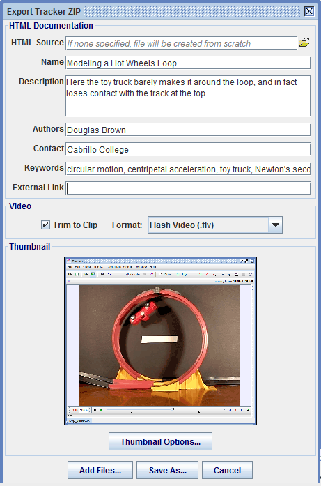

Tracker ZIP Files
A Tracker ZIP file is a zip file with extension .trz that contains an entire Tracker experiment, including tracker file, video clip, support documentation and metadata. Like a traditional Tracker file (.trk), a Tracker ZIP file can be opened in Tracker just by double-clicking it.
Since they are self-contained and self-documenting, Tracker ZIP files are the easiest and most convenient way to package and share Tracker experiments, especially when browsing and searching with the Digital Library Browser ("DL browser").
The figure below shows a typical Tracker ZIP file ("loop2.trz") open in the DL browser. The left pane shows a tree node with the icon and name of the experiment, and the right pane (HTML) displays information about the experiment.
Tracker ZIP files define searchable keywords and other metadata which enable the DL browser to find them readily. The metadata is displayed in a tooltip when the mouse hovers over a tree node as shown.

Fig. 1 A Tracker ZIP file open in the Digital Library Browser
1. Anatomy of a Tracker ZIP file
A Tracker ZIP file is a compressed zip file containing resource files that share a common naming scheme and define all data and metadata used by the DL browser. For example, the file "loop2.trz" contains the following:
- A tracker data file "loop2.trk"
- A video file "loop2.flv"
- An HTML information file "loop2_info.html" (described below)
- A thumbnnail image file "loop2_thumbnail.png"
Note that all of these files have names that start with "loop2".
HTML information files use standard HTML code in the <head> section to define the title (tree node name) and metadata for the Tracker ZIP. For example, the HTML information file "loop2_info.html" includes the following:
<meta name="author" content="Douglas Brown">
<meta name="contact" content="Cabrillo College">
<meta name="keywords" content="circular motion, centripetal acceleration, toy truck, Newton's second law">
<title>Modeling a Hot Wheels Loop</title>
Supplemental HTML, PDF and other support files (with associated images) may also be added to a Tracker ZIP file. These are displayed in Tracker itself (see page views) and/or in separate desktop viewers. They do not have to conform to the naming conventions above.
Tracker ZIP files can be created with any HTML editor and zip utility, but it is much easier to export them from Tracker in a single step as described below.
2. Exporting a Tracker ZIP file
Click the Export Tracker ZIP button on the toolbar or choose the File|Export Tracker ZIP menu item to open a dialog with fields and controls for defining and saving a ZIP file for the currently selected tab.


The figure below shows the Export Tracker ZIP dialog with fields completed prior to exporting the file "loop2.trz" open in the DL browser above.

Fig. 2 Exporting a Tracker ZIP file
3. Dialog fields and controls
The Export Tracker ZIP dialog fields and controls are organized into the following sections.
HTML Documentation: This defines the HTML "info" file displayed in the DL browser.
- The HTML Source field allows you to copy an existing HTML document for use as the HTML info. The appearance of the HTML information file will be identical to the HTML source, but the title and metadata will be defined by the other fields in this section. If no HTML source is specified, the HTML information file is created from scratch using the format seen in the DL browser image above.
- The Name field defines the display name of the experiment (NOT the zip file name). It is shown in the tree (always) and HTML information (unless a separate HTML source is specified) in the DL browser.
- The Description field defines a brief description of the experiment. It is ignored if a separate HTML source is specified. Note: lab instructions and other documentation should be in separate HTML and/or PDF files as described below.
- The Authors field defines the authors of the experiment. Authors are shown in the HTML information (unless a separate HTML source is specified) and included in the searchable metadata.
- The Contact field defines the contact information for the authors (e.g. institution, email, etc.). Contact information is shown in the HTML information (unless a separate HTML source is specified) and included in the searchable metadata.
- The Keywords field defines searchable keywords and phrases. It is common, but not required, to separate key phrases with commas. Keywords are not shown in the HTML information but are included in the searchable metadata.
- The External Link field defines a web URL with more information about the experiment or authors. It is shown as a hyperlink in the HTML information file unless a separate HTML source is specified.
Video: This controls the video added to the ZIP file and opened in Tracker.
- The Trim to Clip checkbox determines whether the original video (untrimmed) or a new video (trimmed to the video clip) is used in the Tracker ZIP. Trimming the video to the video clip may reduce the file size significantly and also has the advantage that any video filters (e.g. brightness/contrast, resize, deinterlace, etc.) are applied to the new video. On the other hand, the original video may be preferred if it contains multiple clips of interest.
- The Format dropdown determines the file type of the trimmed video. The JPEG image format (image sequence) is selected by default and recommended for general use because it can be opened by Tracker even without a video engine.
Thumbnail: This displays and controls the thumbnail image shown in the HTML information file.
- The Thumbnail Options button opens a separate dialog that enables you to set the source, size and format of the thumbnail image.

Button bar:
- The Add Files button opens a file browser that lets you add supplemental files to the Tracker ZIP. There is no limit to the number of supplemental files. Supplemental files may be HTML, PDF, DOC, TXT or other document types, tracker and video files, spreadsheet files, etc. Note: it is NOT necessary to use this button to add HTML files displayed in a Tracker page view--these will be included automatically in the Tracker ZIP.
- The Save As button opens a file browser that lets you name and save the ZIP file. The base zip file name is also used for the tracker file, video file (if trimmed to clip), HTML information file and thumbnail file as described in Anatomy of a Tracker ZIP file above.
- The Cancel button closes the dialog. It does not clear the fields, so when you reopen the dalog you do not need to re-enter the information.
4. Sharing Tracker ZIP files
You can share your Tracker ZIP files directly or on the web.
Direct "live" sharing is perfect for sharing with peers in a classroom or turning in as homework and lab reports. It couldn't be much easier:
- Save the Tracker ZIP file in a shared local directory. All others with access to that directory can open individual files or the entire directory in the DL browser using the File|Open menu item. Figure 1 at the top of this page shows what the file "loop2.trz" looks like when open in the DL browser.
- Email the Tracker ZIP files directly to colleagues or friends. Since they are fully self-contained, copies have full functionality without requiring links to the original.
Sharing on the web makes your Tracker ZIP experiments available to Tracker users worldwide. There are two ways to do this:
- Create a "live" web collection by uploading the ZIP files to a server along with the OSP Digital Library PHP script. See Digital Library Browser for more information.
- Use the DL browser to create, edit and upload an XML collection. This gives you the greatest control over the content and organization of your collection. See Digital Library Browser for more information.
To open a web collection in the DL browser, you need to load its URL path (e.g. "http://www.my_institution.edu/my_shared_experiments/library_collection.php" or "http://www.my_institution.edu/my_shared_experiments/my_collection.xml"). There are several ways to do this:
- Enter the URL path directly into the URL field of the DL browser and click the Load button. See Digital Library Browser for more information.
- Add the URL path to your personal library ("My Library") and select its menu item in the Collections|My Library menu. See Digital Library Browser for more information.
- Email the URL path to Douglas Brown (dobrown at cabrillo dot edu) who can (if approved) add it to the Collections|Shared Library menu visible to all Tracker users.